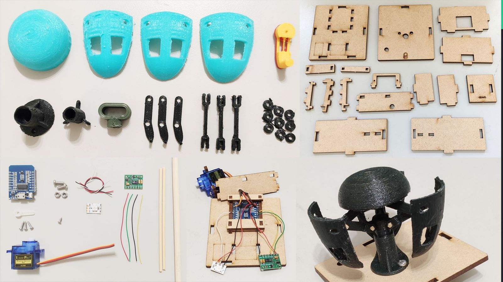
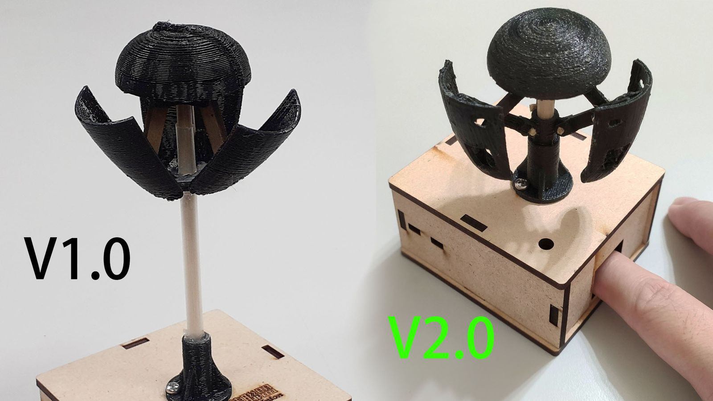
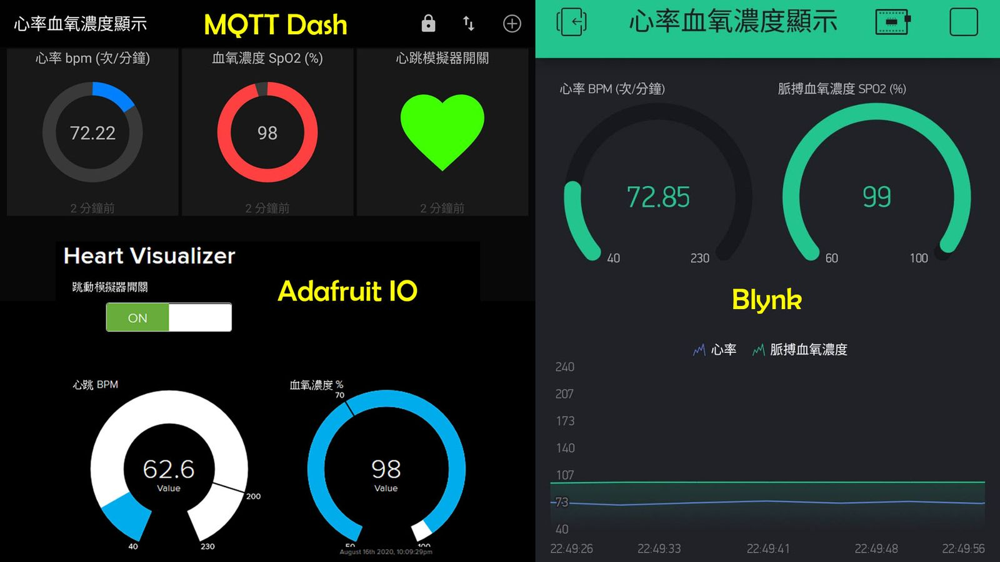

It started with a childhood fascination with seeing a heartbeat, and a practical need to monitor family members’ health at home. The result is part instrument, part teaching aid.
An EKG sensor drives a 3D-printed heart mechanism that contracts in sync with the wearer’s pulse, while an MQTT client streams heart rate and blood-oxygen readings to web and app dashboards. The enclosure and linkages upcycle single-use materials — chopsticks, straws, skewers — so the kit is cheap enough for a classroom.



“A great tool for home health monitoring and a great educational kit at the same time — we were pleased to invite Bo Shih to teach this fun maker project so students could learn about human biology, electronics and coding.”